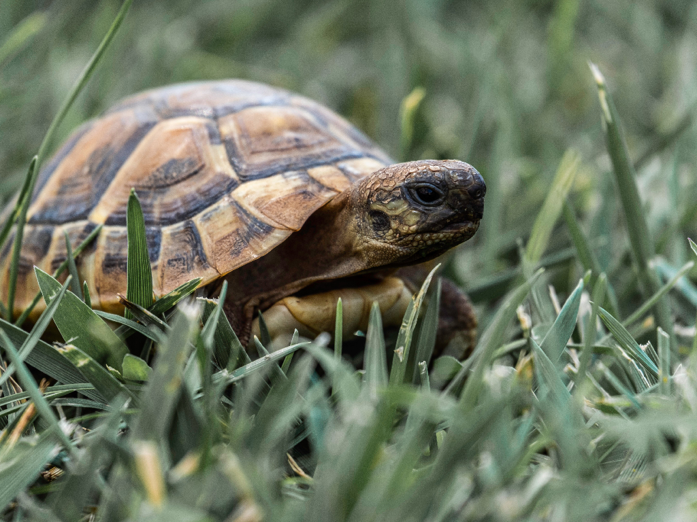
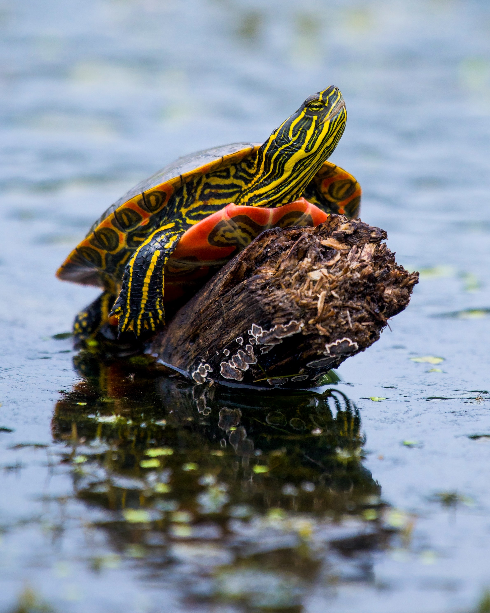
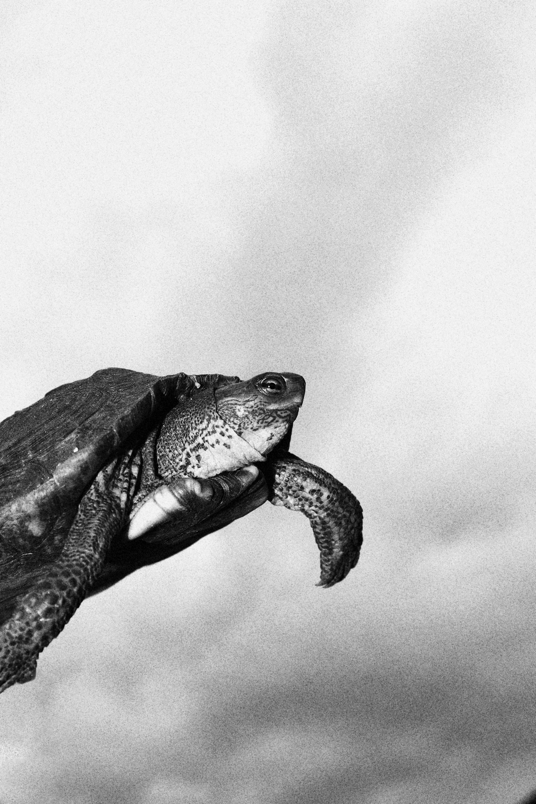

Info
What are turtles?
Turtles are reptiles that belong to the order Testudines or Chelonia.They are characterized by their hard, protective shells that cover their body.
Turtles are cold-blooded and lay eggs on land, and they have been around
for more than 200 million years.
Habitat
Turtles can be found in a variety of habitats,including oceans, rivers, lakes,and forests, and they come in many different shapes and sizes.
Some common types of turtles include sea turtles,
box turtles, snapping turtles, and terrapins.
Role
Turtles are known for their longevity,with some species living for more than 100 years.
They are also important to many cultures around the world,
with some being considered sacred or representing wisdom and longevity.

Food
What do turtles eat?
Turtles are omnivorous and their diet can vary depending on their species,habitat and age. Some turtles are primarily herbivorous,
while others are mainly carnivorous or omnivorous.
Herbivorous turtles typically feed on a variety of plant materials such as
grasses, leaves, fruits, and vegetables.
They also consume aquatic plants such as algae and duckweed.
Carnivorous turtles primarily feed on fish, insects, worms, crustaceans, and other small animals.
Omnivorous turtles have a mixed diet that includes both plant and animal matter.
They may eat a combination of fruits, vegetables, insects, and small animals.
It's important to note that the specific diet of a turtle will depend on their species and their individual needs.
Consult with a veterinarian or a specialist in turtle care to determine the most appropriate diet for your pet turtle.

Captivity

Turtles in captivity
It's difficult to estimate the exact number of turtles in captivity worldwide,as there is no centralized database or registry.
However, it is believed that millions of turtles are kept in captivity around the world
as pets, for food, and for other uses such as traditional medicine.
When kept as pets, turtles require special care to ensure their health and well-being.
Here are some important considerations for keeping turtles in captivity:
Habitat: Turtles require a suitable habitat that meets their specific needs,
including appropriate lighting, temperature, humidity, and space to move around.
Diet: Turtles in captivity require a balanced diet that meets their nutritional needs.
Depending on their species, this may include a mix of vegetables, fruits,
and protein sources such as insects, fish, and other animals.
Cleanliness: Turtles require a clean environment to stay healthy.
Their habitat should be cleaned regularly, and their water should be changed frequently.
Health care: Regular check-ups with a veterinarian who is knowledgeable about
turtle care can help ensure that your pet is healthy and receiving appropriate care.
Overall, keeping a turtle in captivity requires a significant commitment of time and resources
to ensure that they receive the proper care and attention they need to thrive.
Read more on the different Turtle and Tortoise Species
Mississippi Map Turtle
Common Musk Turtle
African Helmeted Turtle
Pig-Nosed Turtle
Green sea turtle